[台中] 無米藏 和洋食
| 餐廳名稱: | 無米藏 和洋食 |
|---|---|
| 地 址: | 台中市南屯區干城街96號 |
| 營業時間: | 週四 ~ 週日 11:30 - 13:30 17:30 - 21:00 |
| 週一 ~ 週三 公休 | |
| 電話 : | 04 2254 5055 |
利奇馬颱風在凌晨偏移路徑，不過颱風假還是已經公告了，基隆、台北、桃園、新竹 都放假了，苗栗、台中等新竹以南的都正常上班上課， 這種時候，當然要去沒放假的城市，享受悠閒，挑了一間口袋中的名單 - 無米藏 和洋食，用網路訂位，店家回覆可以，就衝啦! 越往南，越沒雨，到了台中，哈，放晴了，也不會太熱，真是好啊。
我們到的很早，店內一桌日本人跟小孩。吃到一半，就客滿了。 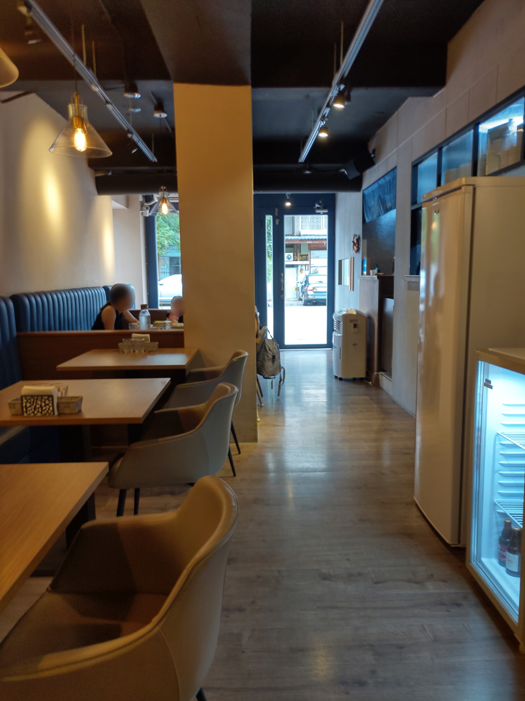
每張桌上都用餐具盒壓著兩片金葉子，金葉子可以移動，不知道是 裝飾 還是 筷架。 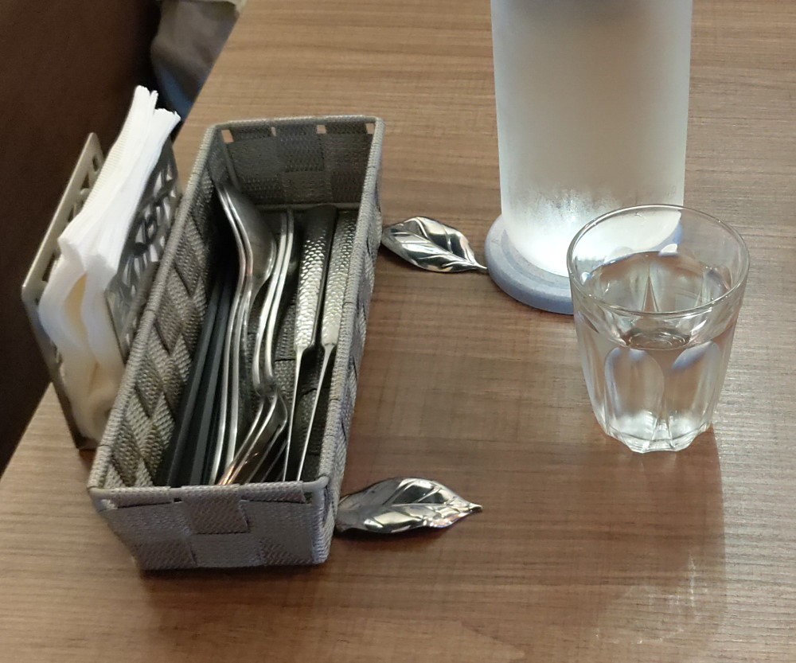 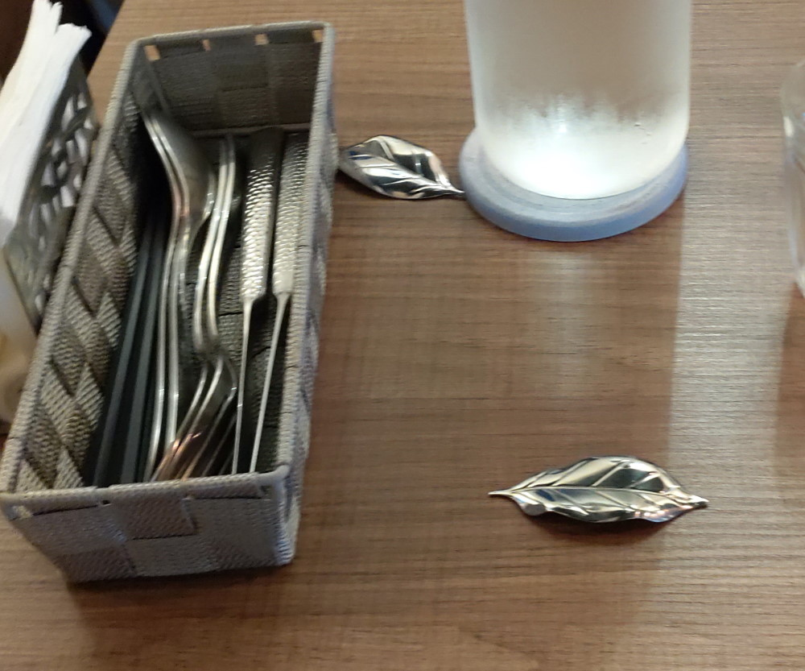
無米藏 官網 有更清楚的菜單。 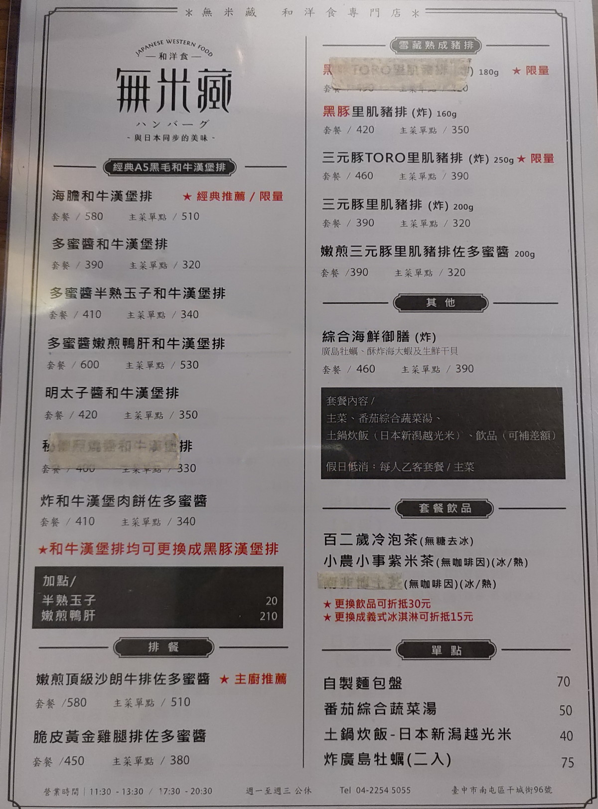 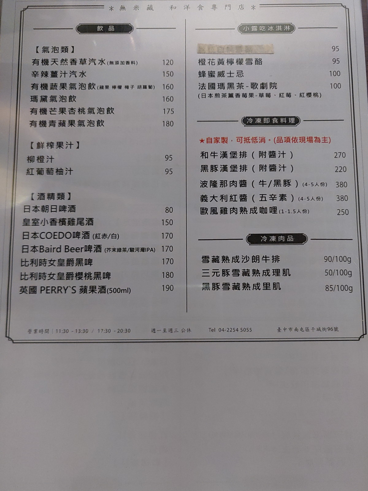
今天是第一次來，就點菜單上註明是推薦的。套餐的湯最先上，是羅宋湯。番茄味很濃郁， 酸味也很適當，不錯。 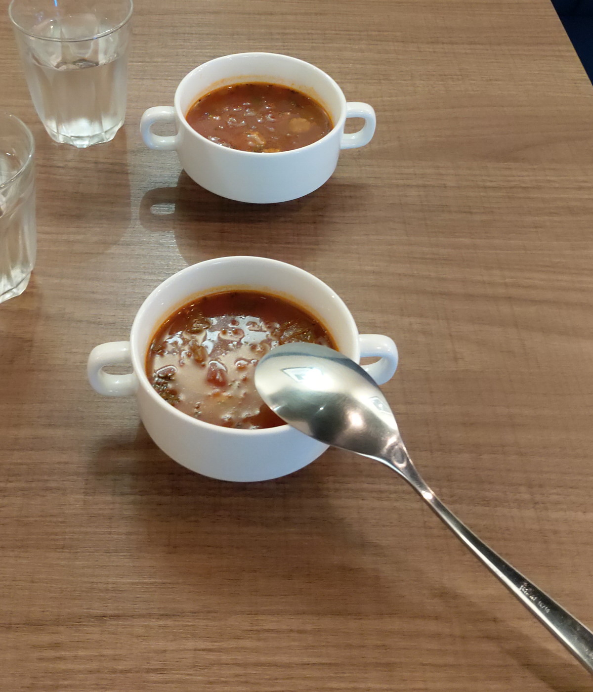
再來就是套餐的飲料，今天沒加錢升級飲料，直接選預設的 百二歲冷泡茶 與 熱的 小農小事紫米茶。 都是用相當好的食材去泡的，香氣逼人。 冷泡茶 今天是使用 金萱，很香，沒加糖。紫米茶喝起來微微地像米漿，當然沒米漿那麼甜， 也是沒加糖只有 純紫米的微甜。 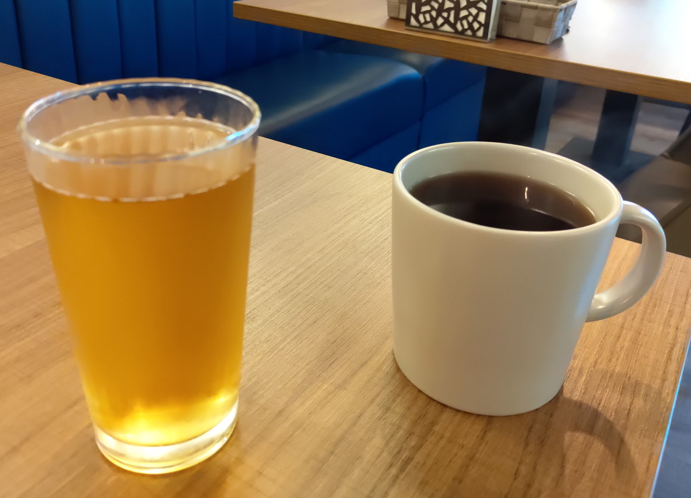
海膽和牛漢堡排， 把 海膽 與 和牛 組合在一起，非常少見。光是用新鮮、上等一點的食材，就很難不好吃了， 再加上廚師把漢堡排煎到微焦，淋上海膽醬汁，味道濃郁好吃，不愧是鎮店之寶。 白飯也很好吃， 新瀉越光米 用 土鍋炊， 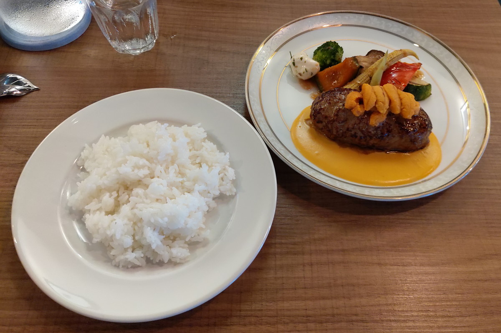
這也是菜單推薦的 沙朗牛排佐多蜜醬，沙朗牛排肉質很好，似乎這種日本的洋食，不問熟度，直接給你廚師認為 的最佳熟度，我覺得如果廚師厲害，這樣蠻好的。 在無米藏吃牛排，特殊的是沾料， 多蜜醬熬的濃稠， 除了鹹香，還有 蜂蜜等香料的綜合香氣。這次多提供兩種鹽，左邊是山葵鹽，右邊是海鹽，兩種鹽 都是店家不知道去哪裡收集來的高級鹽，山葵鹽據說還是得獎的。這三種沾料，屬 山葵鹽 最特殊， 之前從沒嚐過。 吃到一半，牛排也拿去沾 海膽醬汁，這種組合也很好吃，其他牛排館更是不可能這樣配。 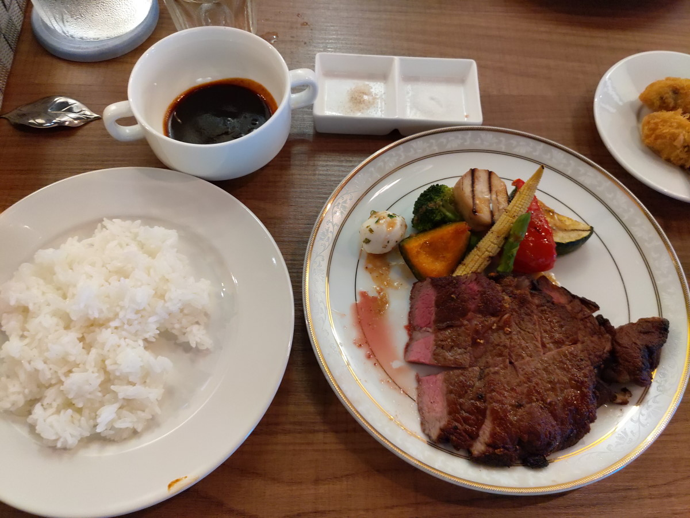
加點的 炸廣島牡蠣，竹北涼太拉麵也有，可是今天心情好，環境舒適，覺得這個炸功，似乎又比涼太強一點。 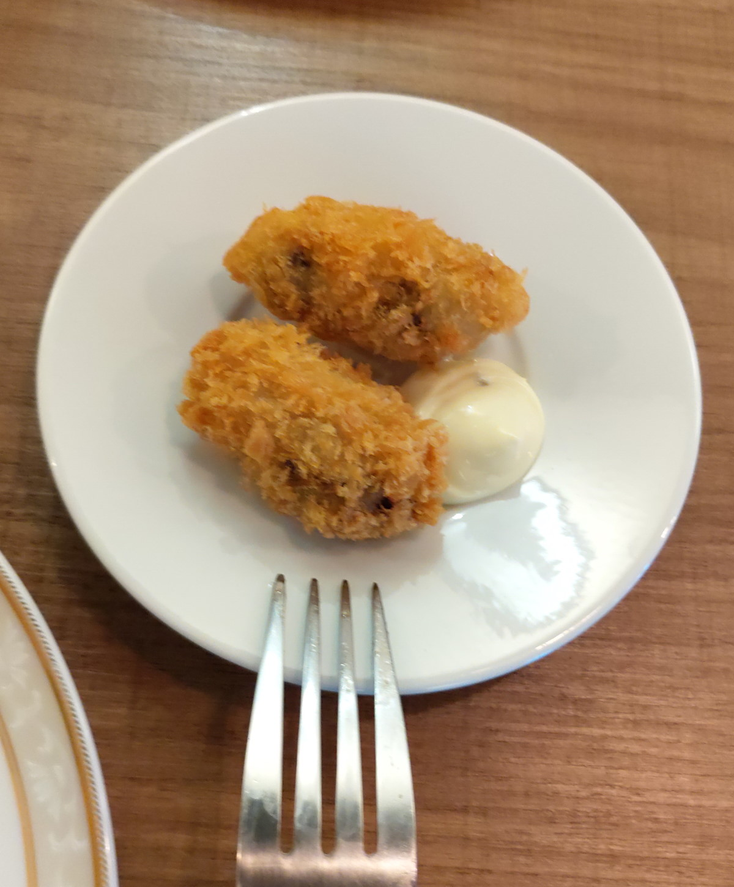
加點的芒果冰淇淋，服務生講很多記不起來全部，似乎是 高雄名店 小露吃 的 夏雪芒果 Gelato ， 是在地的台灣土芒果加上另一種芒果 製成的，酸度，甜度，香氣都很夠。 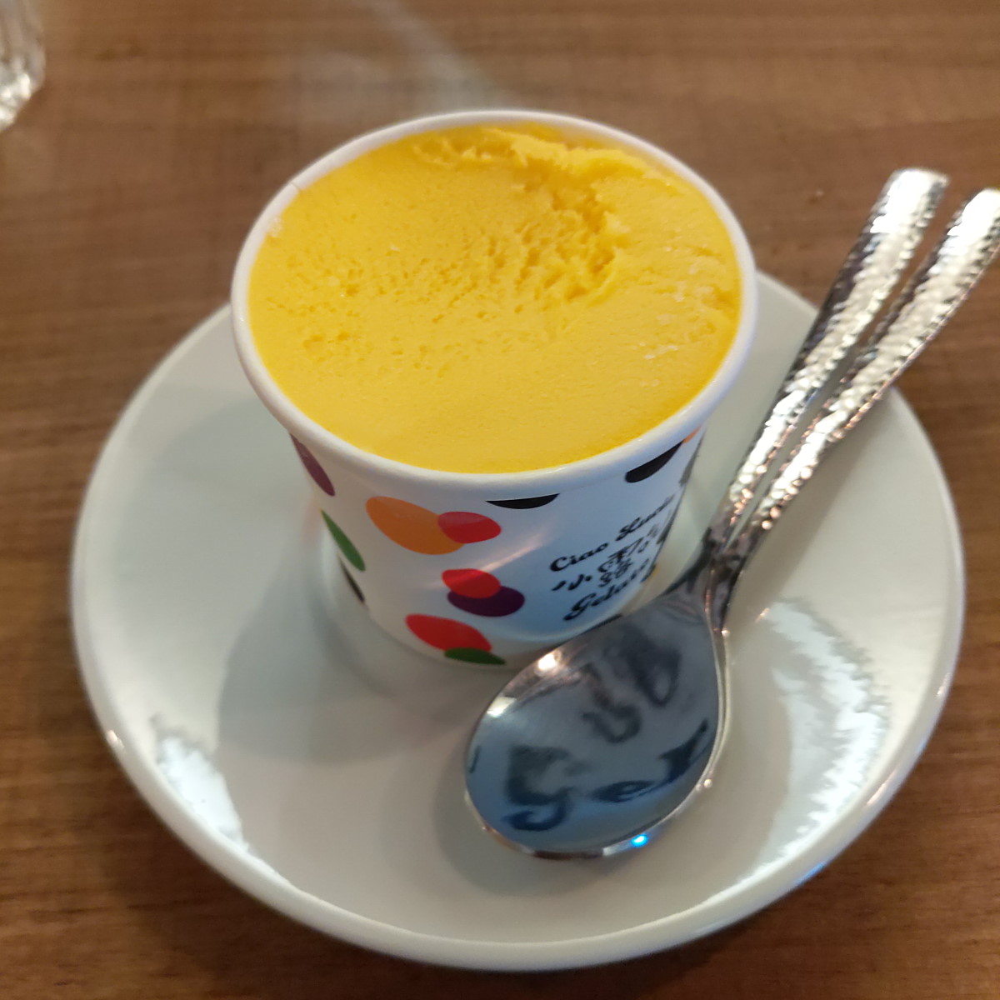
無米藏和洋食 很厲害，每個大大小小的環節，都去找了相當好的食材，連白米，冰淇淋這些次要的也都找了 優秀的來源， 再加上好廚藝，每一口都好吃。有機會到台中旅遊的話，還要再晃過來。